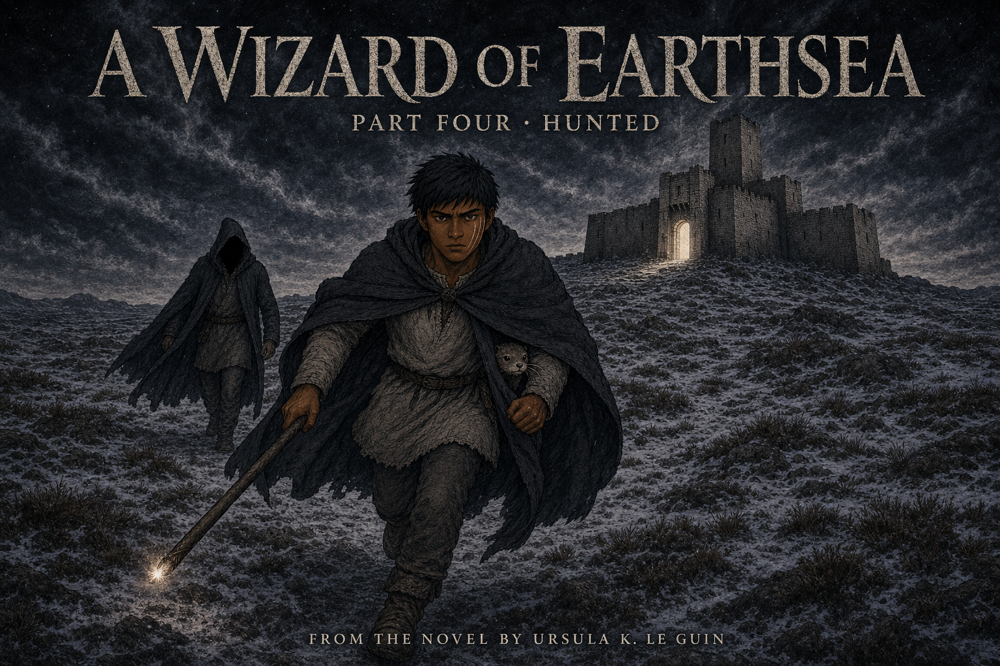

Hunted
Ged left the people who praised him because the shadow made every refuge a danger to others. Roke's own wind recognized what followed him and closed the island against his return. Without rest, counsel, or a language he understood, Ged mistook a planted direction for chance and followed it north. On the Osskil moor, the hunter finally wore a man's clothes and spoke the one name that could leave Ged powerless. The light beyond the gate saved him from the shadow—but not yet from the road fear had chosen.
How Did Fear Choose the Road?
1. Why does Ged leave Low Torning immediately after saving it?
Yes. Ged leaves because staying would turn the community he protected into shelter for the thing hunting him.
No one banishes Ged, and Yevaud's oath sets no reporting deadline. He goes because the approaching shadow would endanger Low Torning.
2. Why does Ged order the ship away from Roke instead of forcing the weather?
Yes. Ged understands that the wind is protecting Roke from what follows him, so he gives up his own refuge to protect the crew.
The shipmaster allows Ged to try, and Ged still trusts the Masters. He turns back because the warding wind will not admit the danger bound to him.
3. Why does the grey stranger's advice work even though Ged distrusts him?
Yes. Ged recognizes danger but is too frightened and tired to distinguish a planted road from a chosen one.
The stranger never speaks Ged's true name, and Ogion has sent no message. The advice succeeds because Ged is isolated and desperate for direction.
4. Why is Hoeg's unease on the moor important?
Yes. Hoeg performs no magic; its ordinary living instinct registers the wrongness Ged has become too exhausted to notice.
Hoeg neither predicts the future nor befriends Skiorh. Its fear matters because it wakes Ged's own nearly buried warning.
5. Why does the gebbeth speaking Ged's true name change the chase?
Yes. The true name turns the naming power Ged used against Yevaud back upon him, leaving him with only a failing physical defense.
No Masters arrive, and the gebbeth does not command Ged like a servant. The name closes his magical choices and weakens the self it names.